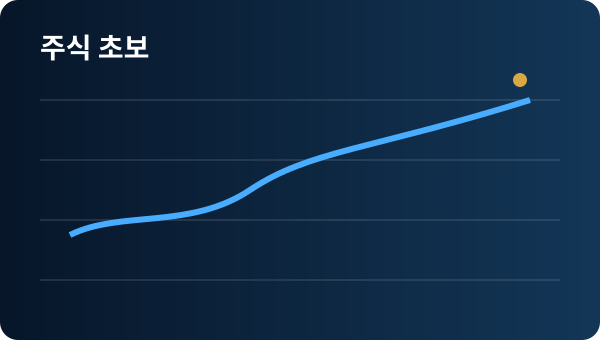

주식무료강의 추천, 초보자가 실패 없이 시작하는 투자 공부 순서
주식 투자를 처음 시작할 때 가장 많이 검색하는 것 중 하나가 주식무료강의입니다. 무료라는 이유만으로 아무 강의나 보는 것보다, 초보자에게 필요한 내용을 순서대로 익힐 수 있는지를 먼저 확인하는 것이 중요합니다. 처음부터 종목 추천이나 단기 수익 사례에 집중하면 기본 원칙을 배우기 전에 매매 습관이 굳어질 수 있습니다. 반대로 시장 구조, 주문 방식, 기업을 보는 기초, 손실 관리 순서로 공부하면 이후 어떤 투자 방식을 선택하더라도 판단 기준을 세우는 데 도움이 됩니다.
현재 관심 분야와 투자 경험을 남겨주시면 상담 신청 페이지에서 필요한 내용을 확인하실 수 있습니다.
상담문의 신청하기
1. 주식무료강의 추천을 볼 때 가장 먼저 확인할 기준
좋은 입문 강의는 특정 종목을 따라 사게 만드는 방식보다 주식시장이 어떻게 움직이는지, 매수와 매도의 차이, 시장가와 지정가 주문, 거래 시간과 수수료 같은 기본 개념부터 설명합니다. 강의 제목이 자극적인 수익률이나 단기간 성과만 강조한다면 실제 교육 내용이 무엇인지 먼저 살펴보는 것이 좋습니다. 초보 단계에서는 “무엇을 살까”보다 “어떤 기준으로 판단할까”를 배우는 것이 우선입니다.
2. 초보자에게 맞는 공부 순서는 따로 있습니다
첫 단계는 주식의 기본 구조와 주문 방법을 이해하는 것입니다. 두 번째는 기업의 매출과 이익, 재무상태처럼 최소한의 기업 정보를 읽는 방법을 익히는 것입니다. 세 번째는 금리, 환율, 업종 흐름처럼 시장 전체에 영향을 주는 요소를 살펴봅니다. 마지막으로 자신의 투자금과 손실 허용 범위에 맞춰 매매 계획을 세우는 연습을 합니다. 이 순서를 건너뛰고 차트 기법부터 외우면 상황이 바뀔 때 대응하기 어렵습니다.
3. 강의를 많이 보는 것보다 복습이 중요합니다
한 번에 여러 강의를 듣기보다 배운 내용을 직접 정리하고 작은 예시를 만들어보는 편이 효율적입니다. 오늘 배운 주문 방식이나 손절 기준을 짧게 메모하고 다음 날 다시 확인해보세요. 실제 매매를 하지 않더라도 관심 종목을 하나 정해 “왜 관심을 가졌는지, 어느 가격대에서 어떤 위험이 있는지”를 기록하면 판단 과정을 연습할 수 있습니다.
관심 분야와 투자 경험을 남겨주시면 상담 신청 페이지에서 필요한 내용을 확인할 수 있습니다.
상담문의 바로가기4. 무료 강의와 투자정보를 구분해서 활용하세요
교육 콘텐츠는 개념을 배우는 자료이고, 시장 정보는 현재 상황을 파악하는 자료입니다. 둘을 혼동하면 오늘의 뉴스나 특정 종목 움직임을 정답처럼 받아들이기 쉽습니다. 무료 강의를 통해 기본 원칙을 만든 뒤 투자정보를 그 원칙에 맞춰 해석하는 순서가 좋습니다. 어떤 정보든 수익을 보장할 수 없기 때문에 최종 판단은 자신의 기준과 위험 관리 계획 안에서 내려야 합니다.
5. 실제 시작 전 반드시 정해야 하는 세 가지
첫째, 생활에 필요한 자금과 투자 자금을 분리합니다. 둘째, 한 종목이나 한 번의 매매에서 감당할 수 있는 손실 범위를 정합니다. 셋째, 매수 이유와 매도 조건을 미리 기록합니다. 이 세 가지가 정리되지 않은 상태에서는 좋은 강의를 들어도 시장 변동성이 커졌을 때 원칙을 지키기 어렵습니다. 특히 초보자라면 수익률보다 오래 지속할 수 있는 투자 습관을 만드는 데 초점을 두는 편이 좋습니다.
주식무료강의 자주 묻는 질문
주식무료강의만으로 투자를 시작해도 되나요?
기초 개념을 배우는 데는 도움이 되지만 실제 투자 전에는 자신의 투자 목적과 위험 허용 범위를 별도로 정하고 충분히 검토하는 과정이 필요합니다.
초보자는 차트부터 공부해야 하나요?
차트보다 시장 구조, 주문 방식, 기업 기초, 위험 관리 원칙을 먼저 익힌 뒤 차트를 보조 도구로 배우는 편이 이해하기 쉽습니다.
무료 강의를 고를 때 가장 중요한 점은 무엇인가요?
단기 수익을 강조하는지보다 초보자가 스스로 판단할 수 있도록 기본 원칙과 위험 요소를 함께 설명하는지 확인하는 것이 좋습니다.
상담 신청 페이지에서 관심 분야와 문의 내용을 남겨주세요.
상담문의 바로 신청